I 12 shogun
Akumei Uragi
Dono
Magia della terra
Imperatore
Note
Fratello minore del precedente imperatore Iguai Uragi, è da poco salito al potere in seguito alla sua morte.
Ufficialmente la causa della morte di Iguai è dovuta ad una cospirazione da parte di alcuni traditori nella sua guardia d’onore, prontamente giustiziati dall’addolorato fratello Akumei.
Nonostante ciò l’ascesa al potere di Akumei ha scatenato non pochi dubbi fra la popolazione e soprattutto fra diversi Shogun, i quali hanno messo in dubbio il diritto di governare del nuovo imperatore.
Secondo le leggi dell’impero di Shinnon, per la nomina di un nuovo imperatore è necessaria l’approvazione di tutti e 12 gli Shogun, pertanto Akumei non gode pienamente dell’autorità del titolo che si è auto assegnato.
Le rivolte e le accuse rivolte verso l’Imperatore Akumei hanno però trovato una dura risposta da parte sua, il quale ha già giustiziato un innumerevole numero di cittadini e sottoposti.
Una tale violenza ha scatenato una dura risposta da parte di alcuni Shogun, portando così il paese in una guerra civile.
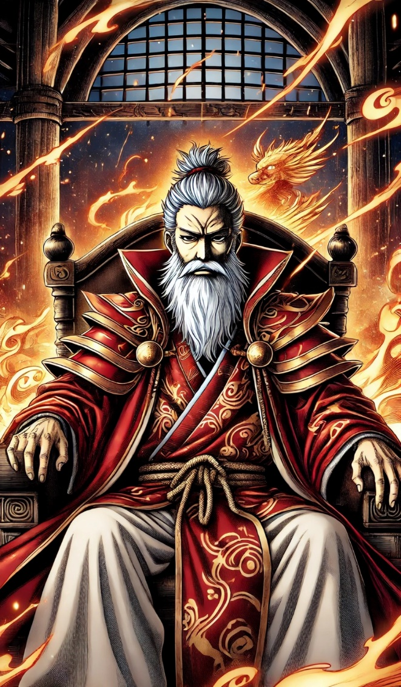
Zankokuna Hage
Dono
Magia del ferro
Primo Shogun
Note
Braccio destro dell’imperatore e capo del gruppo di ninja “Stella nera”.
Quando l’imperatore Akumei salì al potere a venir accusato della congiura contro il precedente imperatore fu il primo Shogun ed il precedente capo della “Stella nera”.
Fu merito di Zankokuna, il quale consegnò alla giustizia i colpevoli del complotto, mostrando la sua assoluta fedeltà al nuovo imperatore.
I colpevoli, i loro sottoposti e le loro famiglie furono giustiziati senza un processo ed i loro corpi impalati furono esposti sulle mura del Palazzo di giada.
Per compensare la fedeltà di Zankokuna, l’imperatore Akumei lo insignì del titolo di Primo Shogun e di maestro della “Stella nera”.
Zankokuna possiede il Dono del ferro, fin da molto piccolo venne allevato da Kyoshi, precedente maestro della “Stella nera” ed addestrato per tutta la vita nella via del Ninja.
Con grande dolore appreso il tradimento del maestro e di diversi suoi confratelli, verso il precedente imperatore, condusse un’epurazione nel gruppo per stanare i traditori e risanare l’onore perduto.
Ora sotto la sua gestione la “Stella nera” segue con grande fedeltà il volere dell’imperatore Akumei, togliendo di mezzo chiunque metta in discussione la sua autorità.
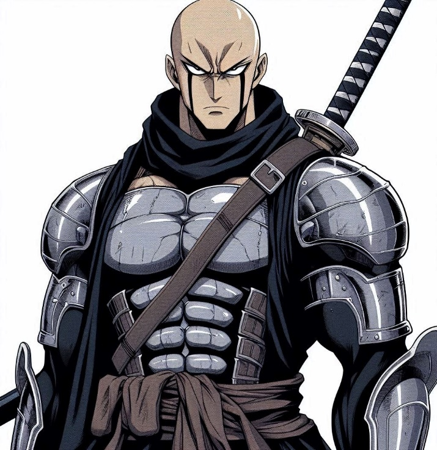
Austin Blowskill
Dono
Magia delle piante
Secondo Shogun
Note
nato da una famiglia non originaria dell’Impero si Shinnon, Austin ha guadagnato la sua autorità ed il rispetto del precedente imperatore distinguendosi durante il conflitto contro l’impero di Terminus.
Ha scalato la gerarchia militare grazie alla sua abilità in combattimento e la sua leadership, al punto da aver lasciato l’imperatore Iguai stupito da tali abilità, il quale decise di premiarlo con il titolo di secondo Shogun.
Nei suoi anni di carriera ha condotto una politica rilassata, amministrando i territori rispettando il benessere dei suoi abitanti, senza particolari ambizioni verso ulteriori poteri e ricchezze.
Dal punto di vista politico ha sempre cercato di non farsi nemici, mantenendo un basso profilo ed eseguendo gli ordini dell’imperatore.
La sua regione conta il maggior numero di combattenti sotto il suo comando, nonostante ciò, nonostante abbia assicurato la sua lealtà nei confronti del nuovo imperatore continua a rimandare l’intervento delle sue truppe nella guerra civile.
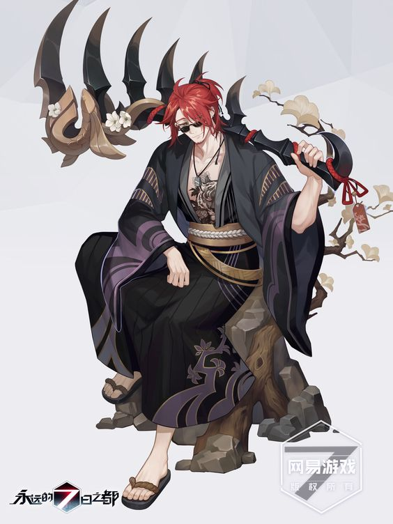
Alea Nidaara
Dono
Magia dell’Acqua, Magia del fumo
Terzo Shogun
Note
Da generazioni la famiglia Nidaara ha fedelmente servito la famiglia Imperiale, Alea è nata in un contesto familiare estremamente competitivo, e maschilista.
Venne addestrata fin da piccola nelle arti dell’intrattenimento, della musica, del canto e della dialettica, in vista un giorno di essere data in moglie per rafforzare la posizione politica della famiglia.
Ma ad Alea non andava giù, aspirava ad una posizione più prestigiosa, come un ragno iniziò a tessere una fittissima tela di complotti, tradimenti, omicidi e corruzioni, fino a che non riuscì ad ottenere il controllo della famiglia, un trono costruito su una montagna di cadaveri.
Ottenuto il potere sulla famiglia ed il ruolo di terzo Shogun le sue mire non si fermarono, continuò a rafforzare la propria posizione, guadagnando ricchezze e prestigio fino a divenire uno degli Shogun più potenti fra i 12.
Alea Nidaara è una politica, fredda e calcolatrice, dai molti volti, in grado di imbonirsi e farsi amico chiunque, finchè ne ottiene beneficio, ma con la stessa velocità è pronta a piantargli un coltello nella schiena se necessario.
Allo stato attuale non si è ancora schierata nella guerra civile, mantenendosi neutrale ed offrendosi di fare da negoziatore fra le parti in conflitto.
Mentre guadagna sempre più consenso da parte della popolazione, accogliendo rifugiati vittime del conflitto ed adoperandosi per cercare di ripristinare la pace nel regno, le sue casse si riempiono sempre di più essendo il primo fornitore di armi per entrambe le fazioni.
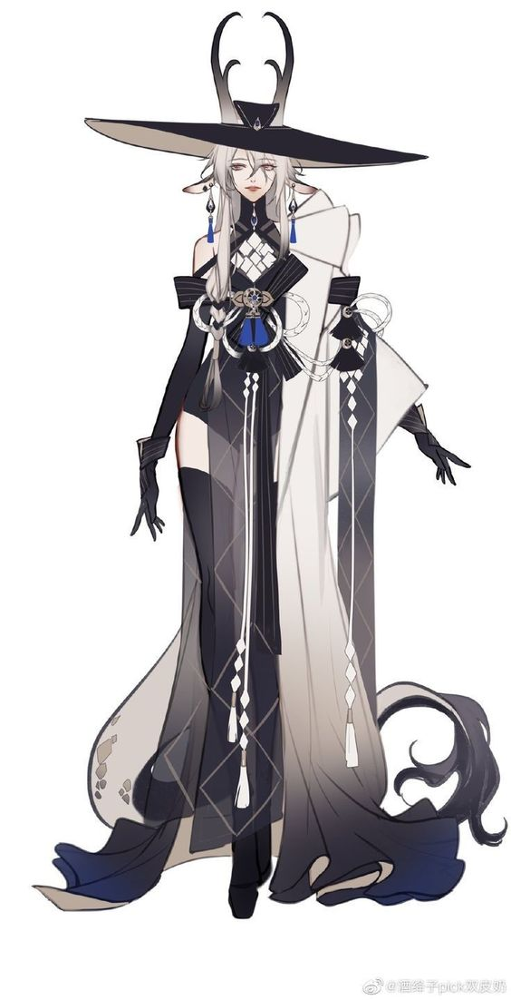
Yoshiro Takeshi
Dono
Quarto Shogun
Note
nella sua lunga vita ha servito fedelmente la stirpe Uragi, combattendo diverse guerre fianco a fianco con l’imperatore Iguai, al punto da ritenerlo suo amico.
Con la morte dell’imperatore e l’ascesa del fratello al potere, Yoshiro venne invitato al palazzo dal nuovo imperatore per giurargli fedeltà, ma una volta arrivato, si trovò vittima di un’imboscata, accusato di aver complottato per la morte dell’imperatore.
Molti degli uomini della sua delegazione morirono per permettergli di darsi alla fuga.
Tornato nei suoi territori, fu uno dei primi shogun a dare al via il conflitto per deporre l’imperatore, accusandolo di esser lui il responsabile della morte dell’Imperatore Iguai e star usando la cospirazione come pretesto per eliminare i suoi oppositori.
La politica di Yoshiro è sempre stata onorevole e rispettosa verso la sua gente, seguendo fedelmente le tradizioni.
Il suo carattere forte ma gentile inspira nella gente e nei suoi sottoposti una forte fedeltà, al punto che quando l’imperatore lo ha reso traditore e nemico dell’Impero, neanche uno dei suoi sottoposti si è tirato indietro, schierandosi al suo fianco contro le forze dell’imperatore.
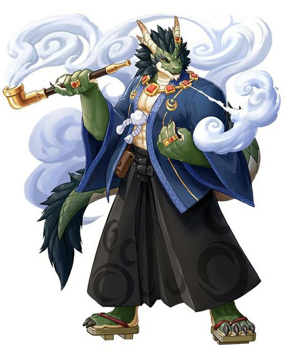
Sharian Vaal
Dono
Magia degli Spiriti, Magia delle Illusioni
Quinto Shogun
Note
Come molti altri Kitsune è difficile comprendere cosa passi per la testa di queste creature così legate al mondo degli spiriti.
I Suoi territori sono ancora allo stato selvaggio, i pochi centri abitati vivono in stretto contatto con la natura ed ospitano la più grande popolazione di Kitsune di tutto il continente.
I mortali possono decidere di convivere con la natura e sfruttarne i suoi benefici o provare a piegarla alla propria volontà e venirne distrutti, questo è il pensiero diffuso nei territori di Sharian.
Proprio per questo la regione gode di una formidabile forza militare chiamata “Cavalca bestie”, un cavaliere che stringe fin dall’infanzia un forte legame con una creatura magica e la cavalca in battaglia come un tutt’uno.
Sharian Vaal ha schierato le sue forze a favore del nuovo imperatore, non è interessato ad onore e tradizione, ne a cospirazioni e tradimenti è un sovrano pragmatico intenzionato a concludere il conflitto rapidamente e nominare ufficialmente l’imperatore così che ottenga piena autorità e poteri.
Non è particolarmente legato al nuovo Imperatore, ma sa che la fazione dei ribelli non ha nessuno da mettere sul trono e nel caso vincessero non vi sarebbe nessuno a poter prendere il posto dell’imperatore, cosa che lascerebbe l’impero scoperto da invasioni esterne, pertanto, meglio un Imperatore disonorevole che non averne nessuno.
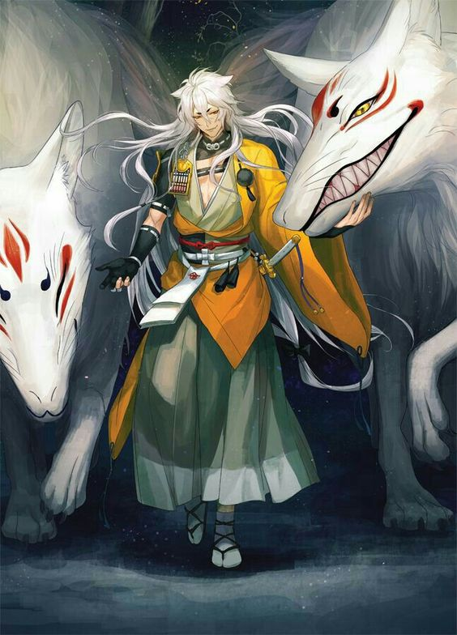
Miyake Shoichi
Dono
Sesto Shogun
Note
Ha appena quindici anni ed è assieme a Corin uno dei più giovani Shogun.
Quando l’imperatore Akumei salì al potere, il padre di Miyake, Fukuyama, assieme ad altri Shogun misero in discussione il diritto di successione dell’imperatore accusandolo di essere il responsabile della morte del fratello Iguai.
Purtroppo la ritorsione di Akumei fu rapida e violenta, le sue truppe attaccarono violentemente i villaggi nei territori degli Shoichi, compiendo atrocità indicibili.
Quando Fukuyama mosse le sue truppe in difesa fu vittima di un’imboscata e venne catturato.
Ora alla guida della famiglia Shoichi e dei territori della regione vi è Miyake, nonostante la giovanissima età è riuscito, sfruttando l’impervio territorio a suo vantaggio a scacciare le truppe fedeli all’imperatore dalla regione e pian piano a risanare le gravi perdite subite dalla sua gente.
Miyake non è un combattente particolarmente abile, ma è astuto ed un formidabile stratega, nonostante l’animo gentile e pacifico, ha tutte le intenzioni di seguire la volontà del padre e spodestare l’imperatore.
La famiglia Shoichi appartiene alla razza dei Tengu, creature divine protettrici dei cieli e dominatrici dei venti.
Il loro territorio risiede fra aspri picchi montani, la gente che vive li è generosa ma forte e resiliente, la ricchezza del territorio sono le numerose vene di metalli e preziosi presenti nelle montagne.
L’esercito degli Shoichi consiste principalmente nei Tengu, combattenti addestrati nello scontro aereo, in grado di dominare il vento a proprio vantaggio.
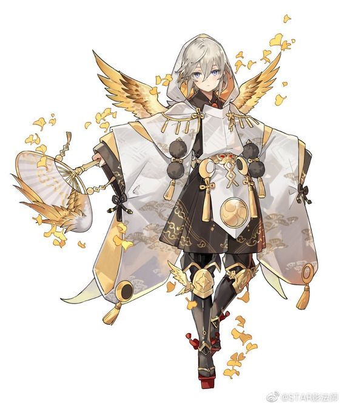
Okami Shenshi
Dono
Magia della guerra, Magia della stategia
Settimo Shogun
Note
Il capo di un gruppo di mercenari che durante la guerra contro l’impero di Terminus si distinse per la propria indiscussa abilità e ferocia in combattimento, lui e la sua banda erano divenuti così essenziali nel conflitto, che l’Impero dovette indebitarsi con loro. Alla fine del conflitto, tale era la somma che l’imperatore doveva al gruppo, che decise di concedere a loro una delle regioni dell’impero, così divenne il settimo Shogun.
Okami è un soldato, non un politico, l’unica cosa che ama più della battaglia è il denaro, nei territori da lui gestiti è concesso ogni tipo di attività immorale, prostituzione, droga, traffico di esseri viventi… più che regnante, il titolo che più si addice ad Okami è quello di Boss mafioso, la gente del luogo lo teme e lo serve per paura, non rispetto.
Fino a che è vissuto, il precedente imperatore cercava di mettere un freno alla politica scellerata di Okami ed alle sue depravazioni, ma il nuovo imperatore è pronto a lasciare via libera alle poche restrizioni impostegli in cambio del suo supporto nel conflitto.
Da quando Okami ed i suoi soldati si sono uniti allo scontro, le atrocità compiute verso i cittadini ed i villaggi ribelli sono stati tali da mettere in allarme il Consiglio della magia, il quale sta valutando l’idea di un intervento diretto nel conflitto.
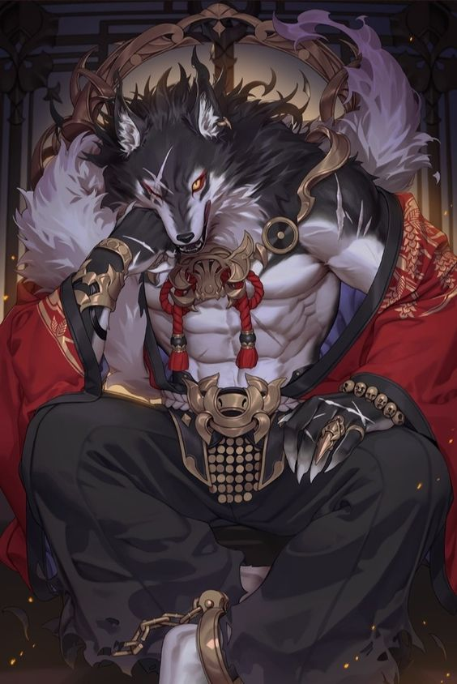
Koraru Shinkai
Dono
Ottavo Shogun
Note
un Elfo alto al servizio della famiglia imperiale da tempo immemore, ha visto susseguirsi diversi imperatori per via della loro breve vita da umani per tanto non si sente particolarmente legato ad un imperatore piuttosto che un altro, vede i colpi di stato qualcosa di futile che non merita il suo tempo ne il sacrificio della sua gente, se un imperatore è indegno, basterà aspettare qualche decina di anni e si passerà al prossimo.
Per questa ragione Koraru non si è schierato nel conflitto, è disposto a riconoscere l’autorità dell’imperatore quando sarà necessario ma non dispiegherà le sue truppe a favore di nessuna fazione.
Per come la vede Koraru gli unici verso cui si sente in obbligo è la sua gente, come regnante ha il dovere di mettersi al servizio del suo popolo e garantire loro una vita serena.
Il regno di Koraru sorge sulle rive dell’oceano, e le sue città sono il fulcro commerciale dell’Impero di Shinnon, perciò, oltre ad essere la regione più ricca è anche quella in possesso della più grande forza marittima del continente, pertanto entrambe le fazioni fanno pressione a Koraru di prendere una posizione nel conflitto, poiché potrebbe essere il peso della bilancia che farà pendere a loro favore.
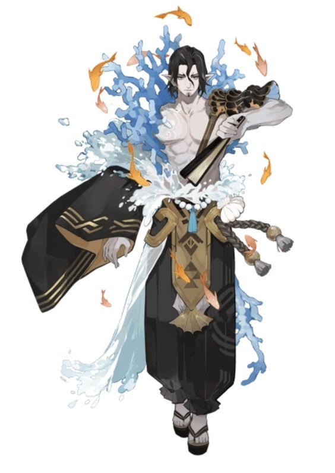
Konall dell’artiglio ferreo
Dono
Magia marziale, Magia del ferro
Nono Shogun
Scuola
Artiglio ferreo
Note
Quando venne fondato l’impero di Shinnon e nominati i primi dodici Shogun, ad occupare il ruolo del nono Shogun vi era un maestro marziale di indicibile abilità, uno dei combattenti più abili mai esistiti.
Il mago passò il resto della sua vita ad insegnare le sue abilità ai suoi discepoli, ma nessuno era in grado di apprendere le innumerevoli tecniche di combattimento in suo possesso, così, alla sua morte i suoi discepoli più abili si erano riusciti a specializzare in un singolo stile di combattimento, solo insieme erano in grado di riprodurre l’intero repertorio del maestro.
Ciascuno dei discepoli aprì il suo Dojo, specializzato nello stile specifico che aveva appreso.
Da allora si decise che poiché solo assieme potevano aspirare alla grandezza del maestro, anche il ruolo del nono Shogun andava gestito assieme.
Così, ancora oggi le decisioni prese dal Nono shogun sono frutto di una decisione comune di tutti i maestri discendenti dallo stile originario, ed ogni anno a rotazione viene nominato un rappresentante diverso.
Konall maestro dell’artiglio ferreo è il rappresentante del nono Shogun, ma all’unisono tutti i maestri discendenti hanno deciso di opporsi al nuovo imperatore, poiché reputano le sue azioni immorali e disonorevoli.
La forza messa in campo dal Nono shogun è formidabile, centinaia di maghi combattenti addestrati nel combattimento da anni, ciascuno di loro in grado di tener testa a 10 dei soldati fedeli all’imperatore, ma potrebbe non bastare considerata la schiacciante inferiorità numerica.

Monsu Usagi
Dono
Magia Marziale, Magia Velocità/lentezza
Nono Shogun
Scuola
Piede fulmineo
Note
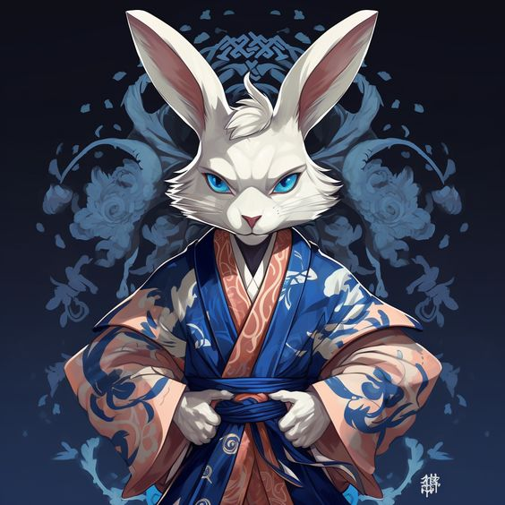
Kana Meiso
Dono
Magia Marziale, Magia Ninja
Nono Shogun
Scuola
Colpo d’ombra
Note
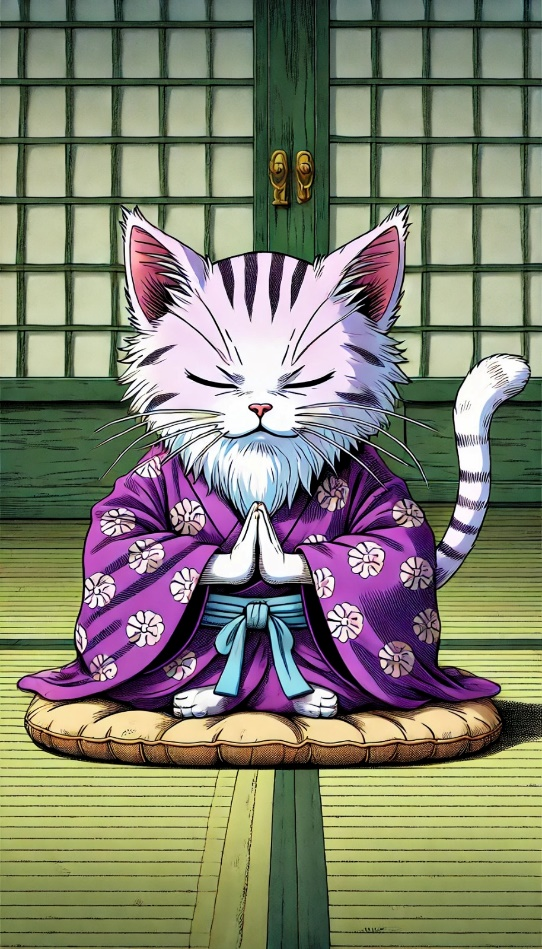
Aoshin
Dono
Magia marziale, Magia Riequip
Nono Shogun
Scuola
Scaglia celeste
Note
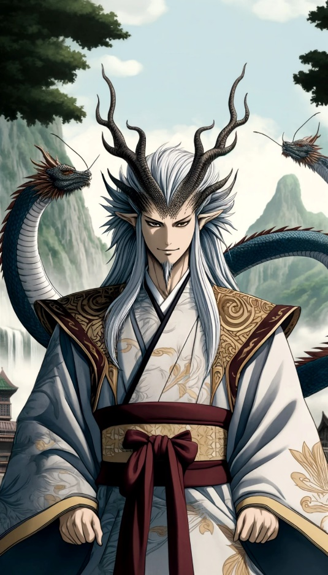
Kodai Yohishi
Dono
Magia marziale, Magia dell’inchiostro
Nono Shogun
Scuola
Disegno marziale
Note
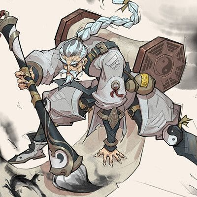
Nezumi
Dono
Magia marziale, Magia della strategia
Nono Shogun
Scuola
Colpo strategico
Note
Dono
Shogun
Note

Eiko Igarashi
Dono
Magia dell'amore, Magia della non morte
Decimo Shogun
Note
Una donna lasciva e provocante che si è fatta strada fra gli Shogun grazie a ricatti e manipolazioni.
Prima di divenire Shogun Eiko era a capo di una grossa organizzazione criminale, durante il conflitto con Terminus decise però di mettere le sue risorse ed abilità al servizio dell’imperatore e Shinnon guadagnandosi così il ruolo di Shogun.
Ora si occupa dell’intrattenimento, addestrando e diffondendo splendide donne per tutta Eltharia, costruendo case chiuse e casinò; queste però oltre a far fruttare molti soldi ad Eiko, sono anche le sue orecchie ed i suoi occhi in tutto il continente.
La regione che gestisce è molto ricca, ma mal distribuita, poche persone sono in possesso di grandi ricchezze, mentre il resto della popolazione fa la fame ed è costretta a fare lavori sottopagati ed estenuanti.
Schierata dalla parte del nuovo imperatore, lo supporta raccogliendo informazioni e diffondendo false informazioni fra la gente.
In possesso del Dono dell’Amore e della Non morte, è in aperto contrasto con Eros, essendo lei il suo competitor più agguerrito, ma la notizia che più si sta diffondendo ultimamente è che sia pronta a contestare la sua autorità sul dominio dell’Amore e stia ultimando i preparativi per sferrare un attacco.
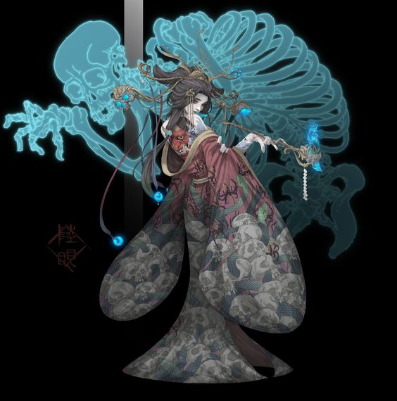
Corin il Maledetto
Dono
Undicesimo Shogun
Note
Poco dopo la fondazione dell’Impero di Shinnon, durante la guerra contro i Demoni, un portale si aprì all’interno dell’impero rilasciando creature mostruose chiamate poi Oni dalla gente del regno.
Queste creature crudeli e spietate cacciavano anime per rafforzarsi ed accrescere il loro potere.
Al tempo fu una vera catastrofe ma l’impero riuscì a contenerli e stringere un accordo pacifico con loro.
Ora dopo diversi secoli, non è difficile trovare Oni vivere fra la gente comune, la loro natura violenta li spinge ad occuparsi dei ruoli nella società più disdicevoli, come l’avvocato o il mercenario.
Vivendo fra la gente sono cominciati ad apparire anche degli ibridi, metà Oni e metà “mortali”, non nascono tramite rapporto sessuale, bensì se un “mortale” ha stretto un patto con un Oni ed in questo periodo concepirà un figlio, è probabile che questi nasca come Mezzo Oni.
I Mezzi Oni hanno una vita dura fin dall’infanzia, alla nascita la loro anima è incompleta, per questo assimilano quella del genitore causandone la morte, per questo sono disprezzati dai mortali più degli Oni stessi, mentre gli Oni li considerano aberrazioni impure.
Corin nacque esattamente come gli altri Mezzi Oni, ma fu più fortunato, venne adottato ed addestrato da Tano Koji il precedente Undicesimo shogun, un vecchio Samurai.
Avendo preso il meglio dalla parte umana e quela di Oni, Corin sotto la guida affettuosa di Koji divenne rapidamente un guerriero formidabile.
Ma quando l’Imperatore salì al potere a scapito del fratello, Koji si oppose alla sua autorità.
Qualche giorno dopo, venne trovato morto, assassinato nella camera da letto ed il primo a venir accusato fu proprio Corin.
Gli assassini speravano che vista la giovane età e la sua razza, sarebbe stato un perfetto capro espiatorio, che si sarebbe dato alla fuga o che sarebbe stato ucciso rapidamente, ma lo avevano sottovalutato.
Corin massacrò tutti coloro che lo avevano accusato, stanò i sicari e li costrinse a confessare dopo giorni di torture.
Riunì la sua gente sfruttando il dolore per la morte di Koji e dando loro un obbiettivo, vendicare l’undicesimo Shogun e deporre l’Imperatore omicida.
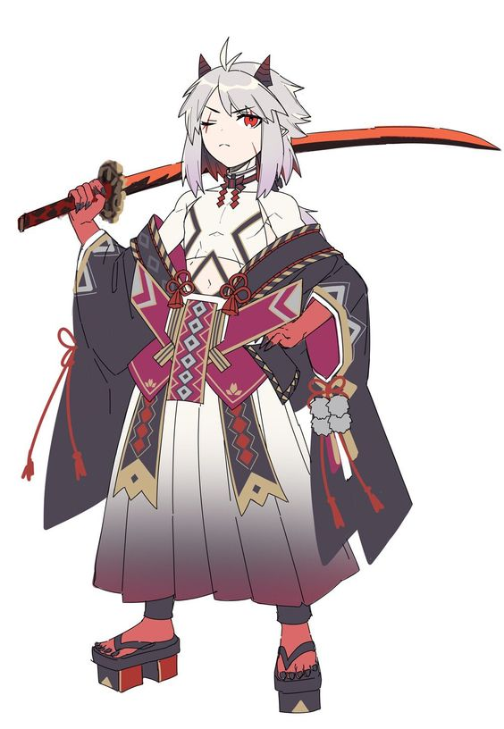
Radhan lo sterminatore
Dono
Dodicesimo Shogun
Note
Nei territori del Sud confinanti con Innstrad ed il Deserto ardente, vi sono dei picchi, roccia e calore rendono la vita li estremamente difficile, solo le creature più feroci e resilienti sopravvivono.
Questi territori sono una piccola regione dell’Impero di Shinnon, sono pochi i villaggi presenti fatta eccezione per un enorme città fortificata, punto strategico fondamentale come per il controllo dell’area e punto commerciale.
Quando questa zona fu annessa, vi fu un conflitto territoriale con dei giganti runici che vivevano in quel territorio, erano poche decine, contro migliaia di combattenti dell’Impero di Shinnon, ma nonostante ciò, la loro forza e la loro furia in battaglia costrinsero l’impero a scendere a patti con la tribù, formarono un’alleanza e nominarono uno di loro Shogun.
Dai selvaggi di quel tempo è passato molto tempo, ora i Giganti runici continuano a controllare la regione ma hanno imparato a governare con giustizia ed onore, divenendo parte integrante dell’impero di Shinnon.
Durante la guerra con l’impero di Terminus i giganti erano in prima linea e Radhan si distinse come combattente, guadagnando il nome di Sterminatore.
Radhan e la sua gente non si sono ancora schierati, per loro l’unica cosa che conta è la forza, poco importa se l’imperatore è legittimo o illegittimo.
Per questo ha indetto un torneo nel suo territorio, colui che sarà in grado di sconfiggerlo avrà il suo supporto in battaglia.
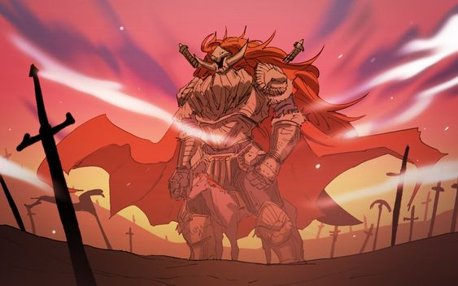